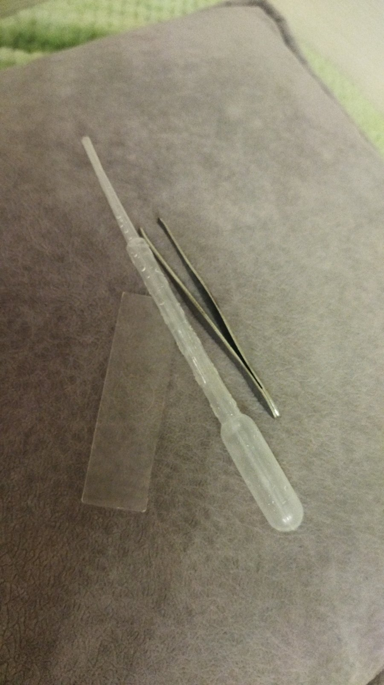
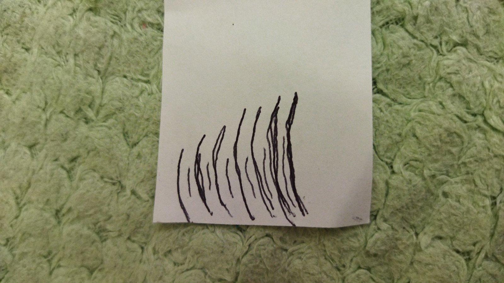

ответ на вопрос № 1
Микроприпораты используются для того, чтоб лучше работать с микроскопом
ответ на вопрос № 2
1. Взять микропрепорат из ящичка для микропрепоратов. 2. хорошенько его промыть под проточной водой. 3. положить микропрепорат рядом с микроскопом. 4. когда наблюдение закончено то, положить микропрепорат в ящичек для микропрепоратов
ответ на вопрос № 3
Ящичек для микропрепоратов
ответ на вопрос № 4
Потому что большие объекты будут выходить за рамку окуляра микроскопа и предмет не будет виден
ответ на вопрос № 5
1. осторожно взять пинцетом лист бегонии. 2. смочить пипеткой предметное стекло, а затем положить на воду покровное стекло. 3. посмотреть на лист бегонии, а затем сложить все препораты в ящичек для микропрепоратов
лабороторная работа № 2

красным закрашены клетки помидора. Чёрным его оболочка, а белое мякоть
мои микропрепораты это: пипетка, пинцет и предметное стекло
промыв и продезенфицировав микропрепораты я приступил к работе: поставив на предметный столик покровное стекло я смочил пипеткой покровное стекло. Затем пинцетом я отщипил маленький кусочек ваты я получил такую картину:

Посмотрев на рисунок мы увидели, что волокна идут с лева на право и зарисовка выглядит вот так
